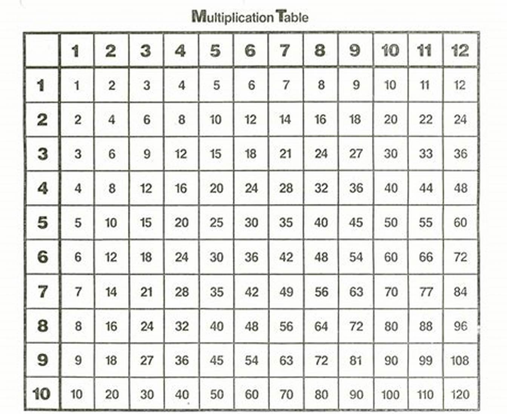
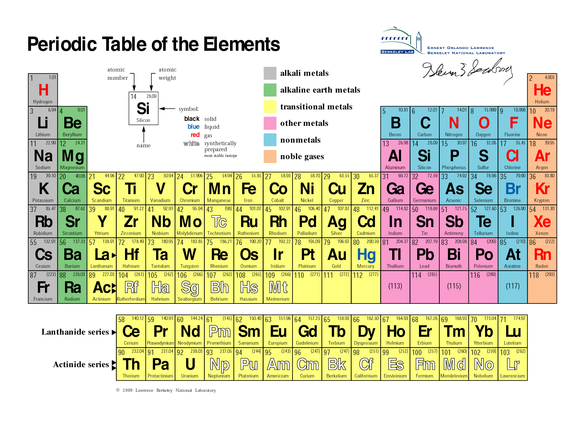
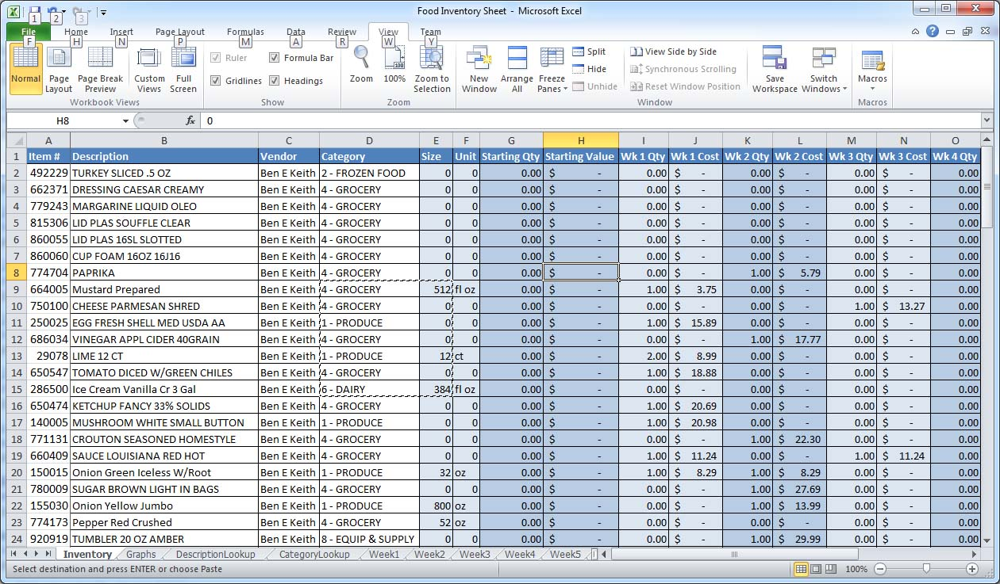

| Name | Surname | Favourite Sauce | Hometown |
|---|---|---|---|
| Ismet | Samsodien | Garlic Sauce | Cape Town |
| Naasik | Kamish | Mayo | Cape Town |
| Fatima | Hendricks | Tomatoe Sauce | Cape Town |
| Liam | Hendricks | Balsamic | Cape Town |
| Rasool | Booley | Garlic sauce | Cape Town |
| Taylor | Davids | White sauce | Cape Town |
| Raasikh | Booley | Blue sauce | Cape Town |
| Khanyiso | Haman | Cheese sauce | Cape Town |
| Nathier | Manuel | Sphagetti sauce | Cape Town |
| Justin | Creighton | Mint sauce | Cape Town |
| Keanan | Erasmus | White sauce | Cape Town |
| Tabile | Khume | Garlic sauce | Cape Town |
| Ebraheem | Seare | Tomatoe sauce | Cape Town |
| Marlin | Ford | Cheese sauce | Cape Town |
| Elizabeth | Pollard | Mayo | Cape Town |
| Imraan | Meyer | Mint sauce | Cape Town |
| Nur | Brock | White sauce | Cape Town |
| Marco | Paulse | Tomatoe sauce | Cape Town |
"Publishing" is an incredibly vague term, unsure of what the brief means by this, internet provides no clearer insight.
Tables can be used in mathematics as a concise way to store values needed on more than one occasion.
The periodic table is information about all chemical elements represented in tabular form. Using a table allows for easy and useful representation of the data.
Databases use tables to store different types of information about an individual, company, program, ect.
Software applications can use tables to easily store and later call chunks of data that have between categorised for specific uses.